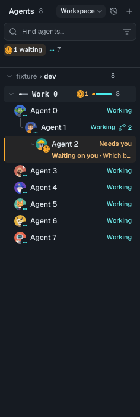

Customize the built-in panes
Fork the Inbox pane, Notes or agent list pane from the exact HTML shipped with this app. To customize Inbox, start with its complete source and keep the live plumbing.
Start with the shipped source
These are read-only examples, generated from the current implementations. Each begins with a “Fork me” provenance comment; every remaining byte matches its source. Copy the whole file, including its scripts and declarations, into your own pane. Editing an example in the docs team does not customize the app.
- Inbox HTML —
src/features/shell/right-pane/__fixtures__/inbox-pane.html. This is the built-in HTML Inbox the app ships. - Notes HTML —
src/features/shell/right-pane/__fixtures__/notes-pane.html. An HTML alternative; the app can also use classic Notes. - Agent list HTML —
src/features/shell/slots/__fixtures__/agent-list-pane.html. An HTML alternative; the default dock is native.
You need no application checkout. Follow the function names in these copies and apply the edits below. The source paths explain provenance, not a dependency on a developer workspace.
Save and preview your fork
- Read the selected example as text. Give its
<title>a recognizable name, such asBackend triage. Before overwriting an existing custom pane, callpane_listfor the intended org/team, find that fork’s returnedpath, and use ordinary local filesystem access to read it and copy a backup outside everypanes/directory. A backup HTML left inpanes/becomes another discoverable pane. There is no pane-read MCP tool; do not assumeread_content_fileaccepts pane paths. - Use a distinct id for the first preview, such as
backend-triage-preview. For a right-pane preview of the agent list, change itscodesense:slotsfromdocktoright-pane dock. Keep Notes’right-panedeclaration. Inbox uses itshuman-inboxsurface. - Keep the original capabilities, commands, event handlers, visibility handling and cleanup. Check declarations, SDK methods, exact typings, grants and slot ceilings rather than copying a permission table. Declaring a capability requests it; policy and the slot still bound the effective grant. Notes reads your private records; a team-safe pane may be denied them. Never work around a denial by broadening policy.
- Call
validate_live_data_docwith{ content: html }for the edited HTML (or{ path: localFilePath }to validate a local file), resolve its diagnostics, thenpane_writewith the whole document.pane_writeoverwrites a file; it does not merge edits. Usescope: "personal"only when the user requests a private fork; the tool calls this scope “personal”, while discovery labels it “private”. - Call
pane_openwith the same id and scope. Confirmplaced: true; otherwise switch to the named team or a child team (or the private fork’s org), then call it again. The fork is a separate panel. Use View → Panels and its title to show it again.
// Agent-side MCP calls. html is the complete copied and edited document.
mcp.call("validate_live_data_doc", { content: html })
mcp.call("pane_write", {
org: "acme/api", scope: "personal", id: "backend-triage-preview", html
})
mcp.call("pane_open", {
org: "acme/api", scope: "personal", id: "backend-triage-preview"
})
// Team fork instead: use this target for pane_write; omit html on pane_open.
// { org: "acme/api", team: "backend", scope: "team", id: "backend-triage-preview", html }# Local shell example. Set pane_path to the exact custom file path from pane_list.
# Choose a backup_path outside panes/ before overwriting the original.
cp "$pane_path" "$backup_path"
# To restore that existing fork later:
cp "$backup_path" "$pane_path"A private pane belongs to you within that org; a team pane is discoverable by that team and its children. Sharing follows your team’s content workflow. A preview does not change an Inbox shortcut or select a Notes/dock source.
Customize the Inbox pane: one team’s needs-you queue
In the Inbox copy, use your real org and team in place of acme/api and backend. This queue works while that team is active and intentionally shows an error asking you to switch teams elsewhere. Promoting it to a private canonical Inbox affects every team you open in that org; promoting it to a team Inbox also affects child teams. Other teams’ Inbox entry points will show that error, not their mail. Keep it as a distinct-id side panel if that broader effect is unwanted. It explicitly binds every read and write to that pair, including history paging, and uses the real message kind. Unread is a separate property.
Here “needs-you” filters the conversation list: an extra query supplies eligibility, unread counts and previews from the latest 500 matching needs-you messages. Opening one shows the complete conversation, including updates and your replies. The pane badge keeps the shipped full-Inbox unread count; the list counts only matching needs-you messages. Keep the shipped unfiltered message windows, conversation summaries, history cursors and paging unchanged. The small derived list view below does not filter thread messages or rewrite summary counts.
@@
- const contextReady = cs.context().then((ctx) => {
+ let triageMessages = [];
+ const triageTeam = { org: "acme/api", team: "backend" };
+ const contextReady = cs.context().then((host) => {
+ const current = host.activeTeam || { org: host.org, team: host.team };
+ if (current.org !== triageTeam.org || current.team !== triageTeam.team)
+ throw new Error("Switch to the triage team before opening this Inbox");
+ const ctx = { ...host, ...triageTeam };
@@
- crossTeam = ctx.inboxScope === "all-teams";
+ crossTeam = false;
@@
- const writeTeam = (team) => (crossTeam ? team : {});
+ const writeTeam = () => triageTeam;
@@
- const [inbox, sent, roleView, status] = await Promise.all([
+ const [inbox, sent, roleView, status, queue] = await Promise.all([
@@
- crossTeam ? cs.inboxRollup?.() : cs.inbox({ scope: "to-human", limit: 500 }),
- crossTeam ? null : cs.inbox({ scope: "to-agents", limit: 500 }),
+ cs.inbox({ ...triageTeam, scope: "to-human", limit: 500 }),
+ cs.inbox({ ...triageTeam, scope: "to-agents", limit: 500 }),
@@
- cs.humanStatus(),
+ cs.humanStatus(),
+ cs.inbox({ ...triageTeam, scope: "to-human", kind: "needs-you", limit: 500 }),
@@
- conversations = inbox.conversations || [];
+ triageMessages = queue.messages.filter((m) => !m.archivedAtMs);
+ conversations = inbox.conversations || [];
@@
- threads = [...groups.values()]
+ threads = [...groups.values()]
+ .filter((t) => triageMessages.some((m) =>
+ conversationKey(m.conversation, m.team) === t.key,
+ ))
@@
- unread: t.summaries.reduce((n, c) => n + c.unread, 0),
+ unread: triageMessages.filter((m) =>
+ conversationKey(m.conversation, m.team) === t.key && unread(m),
+ ).length,
@@
- const rows = threads.map((t) => {
+ const rows = threads.map((t) => {
+ const queued = triageMessages.filter((m) =>
+ conversationKey(m.conversation, m.team) === t.key,
+ );
+ t = { ...t, last: queued.reduce((a, b) =>
+ a.createdAtMs > b.createdAtMs ? a : b,
+ ) };Leave refresh(), its dirty/visible guards, onInbox subscriptions, stable message/conversation keys and the existing reply, archive and navigation handlers in place. Verify a needs-you conversation appears, an update-only conversation does not, and a fresh needs-you message updates the list without reopening it. In an open thread, updates and replies remain visible and older history stays reachable with the original Load older messages control.
Notes: count the pinned section
Notes already separates pinned and recent notes. partitionNotes() reads fields.pinned, sorts pinned notes by title, and keeps recent notes separate. Make a small useful variation: include the current pinned count in its section heading. In renderList(), replace the pinned entry in the section loop:
@@
- ["Pinned", pinned],
+ [`Pinned (${pinned.length})`, pinned],This counts the current search results. With no search, it counts all pinned notes. Empty groups remain hidden. Keep the real Pin/Unpin menu: it writes the note’s existing metadata through the records API. Pin or unpin a note and confirm the section and count update live. Keep records subscriptions and editor lifecycle unchanged; there is no separate pin store or pin API.
Agent list: group by roles

Inside flatten(), replace only the status arrangement branch with role grouping. Relabel its menu choice and active chip as shown. Then open Filter and arrange agents → By roles in your fork. Team, manager and workspace arrangements keep working; the internal saved value status is reused for the relabeled choice.
@@
- if (ui.arrange === "status") {
- for (const [rank, label] of [
- [0, "Needs you"],
- [1, "Working"],
- [2, "Ready"],
- [3, "Other"],
- ]) {
- const members = viewRefs.filter(
- (r) =>
- (CRASHED.has(sessions.get(r.sessionRef)?.effectiveStatus) ||
- sessions.get(r.sessionRef)?.state === "offline"
- ? 3
- : subagentsWorking(sessions.get(r.sessionRef))
- ? 1
- : (r.statusGroup ?? 3)) === rank,
- );
- if (!members.length) continue;
- out.push({ id: "status:" + rank, kind: "heading", label, height: 26 });
- for (const ref of members) agent(ref, null, false);
- }
- return out;
- }
+ if (ui.arrange === "status") {
+ // Group each row once by its complete role set, within its team.
+ const roleGroups = new Map();
+ for (const ref of viewRefs) {
+ const held = sessions.get(ref.sessionRef)?.roleHoldings || [];
+ const roles = [...new Set(held.map((r) => r.role))].sort();
+ const key = JSON.stringify([ref.teamKey, roles]);
+ if (!roleGroups.has(key)) roleGroups.set(key, { team: ref.teamKey, roles, refs: [] });
+ roleGroups.get(key).refs.push(ref);
+ }
+ for (const [key, group] of [...roleGroups].sort(([, a], [, b]) =>
+ a.team.localeCompare(b.team) ||
+ Number(!a.roles.length) - Number(!b.roles.length) || a.roles.join(", ").localeCompare(b.roles.join(", ")),
+ )) {
+ out.push({
+ id: "roles:" + key,
+ kind: "heading",
+ label: group.team + " · " + (group.roles.join(", ") || "Unassigned"),
+ height: 26,
+ });
+ for (const ref of group.refs) agent(ref, null, false);
+ }
+ return out;
+ }
@@
- chips.push(chip("By status", "Arrange by team", () => changeArrange("teams")));
+ chips.push(chip("By roles", "Arrange by team", () => changeArrange("teams")));
@@
- ["status", "By status"],
+ ["status", "By roles"],
@@
-<option value="status">By status</option>
+<option value="status">By roles</option>Each heading includes its team and complete sorted role set. A multi-role session appears once under, for example, builder, reviewer; no role is discarded and no row id is duplicated. Sessions without a role go under Unassigned. Headings sort by stable keys; members retain the host’s order. This changes presentation only: agent(ref, null, false) keeps the existing session identity, selection, menu, stop and navigation actions. Keep the sessions subscription and its repaint callback. Role changes should regroup the same rows live.
Select the fork and restore the original
Replace the Inbox entry point
After the distinct-id preview works, write the same edited HTML with the canonical id: "inbox", in the requested private or team scope. Use the Inbox entry in View → Panels (or the Inbox shortcut) to reveal it. With no explicit profile choice, Inbox resolves the nearest team-chain inbox, then your private inbox, then the bundled built-in. A team fork therefore takes precedence over a private fork: a private inbox will not replace an existing team inbox. Sharing a team-scoped id: "inbox" replaces that team’s Inbox for everyone using its content, including inheriting child teams. Coordinate that change with the team before sharing it. An existing explicit profile selection takes precedence over this automatic lookup; writing a canonical file does not change that selection. See the saved-choice check below if your fork does not appear.
To revert, delete or rename your fork’s panes/inbox.html at the path returned by pane_write, or copy the outside-panes/ backup back to that exact path if there was already a custom Inbox. Reveal Inbox again after discovery updates. Removing a private fork returns to the bundled Inbox only if no team fork or explicit profile choice still wins. Identify the original by dashboardRef.scope: "built-in" and its app-owned path, {codesense_home}/users/{principal}/builtin-panes/panes/inbox.html. Its outer pane_list entry can say scope: "private"; that label alone does not make it your custom fork. Do not edit or delete that original or the docs example. There is no “classic Inbox” toggle.
If a saved Inbox choice still wins
Inspect the local profile JSON with ordinary filesystem access at {codesense_home}/users/{principal}/scratch/orgs/{owner}/{repo}/config/profile.json. Look at rightPaneSurfaces.inbox and slots["right-pane"], and match any saved reference against the full dashboardRef in pane_list, including its scope and team. Use that listing’s exact path to identify the selected custom file. A private installed copy can remain selected after its original team source is removed.
There is no shipped Inbox reset control or MCP tool for inspecting or clearing those profile fields. Do not invent a picker or assignment call. If the user wants to retire the selected custom fork, back it up outside panes/ and remove or rename that exact custom file; when the reference no longer matches a listed Inbox, canonical team → private → built-in lookup resumes. This does not erase the saved reference: restoring the same selected fork can make it win again. If that selected pane should stay, leave it intact and use your distinct-id preview as a side panel.
Notes
A distinct Notes fork can be opened as its own right panel with pane_open. In Settings → General, Use the classic Notes set to On restores native Notes; Off uses the current/found HTML Notes surface. This is a classic-versus-HTML toggle, not an arbitrary fork picker: opening your distinct-id preview does not assign it to the Notes entry point.
Agent list
For your final dock fork, preserve codesense:slots="dock" (or right-pane dock if you also want a side-panel preview). In Settings → General → Agents list, choose your fork’s title/identity from the list. Choose Built-in to restore the native agent list. Removing a preview file only removes that preview; restore a selected dock choice before deleting its file.
Agents can write, validate and open panes today. A generic MCP assignment tool for surfaces/slots is not available yet; do not invent an assignment call. Manual selection, including the dock picker above, remains the user step.
Keep the fork current
App updates refresh these generated examples, not your customized copy. Keep the original snapshot and your small diff; compare a new example against it before carrying your edit forward. Revalidate and repeat the live checks after updating. Saving your pane prepares a replacement behind its frozen working view and swaps only when ready. A broken save keeps the previous version interactive under a fallback strip; hidden panes catch up on reveal. See pane saves and the optional state snapshot. Preserve subscriptions, teardown, commands and stable row ids rather than building another state store.
Continue with a custom live list, pane shapes, commands and menus, lifecycle and liveness, records and testing and conformance. See also generated live topics and exact MCP tool arguments.